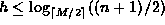
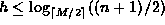

Data Structures and Algorithms
with Object-Oriented Design Patterns in Java
Data Structures and Algorithms
with Object-Oriented Design Patterns in JavaThe running time of the downward pass of the insertion algorithm is identical to that of an unsuccessful search (assuming the item to be inserted is not already in the tree). That is, for a B-tree of height h, the worst-case running time of the downward pass is
The second pass of the insertion algorithm does the insertion and balances the tree if necessary. In the worst case, all of the nodes in the insertion path up to the root need to be balanced. Each time the insertPair method is invoked, it calls findIndex which has running time in the worst case. The additional time required to balance a node is O(M). Therefore, the worst-case running time of the upward pass is
Therefore, the total running time for insertion is
According to Theorem  ,
the height of a B-tree is ,
where n is the number of keys in the B-tree.
If we assume that two keys can be compared in constant time,
i.e.,
,
the height of a B-tree is ,
where n is the number of keys in the B-tree.
If we assume that two keys can be compared in constant time,
i.e.,  ,
then the running time for insertion in a B-tree is simply .
,
then the running time for insertion in a B-tree is simply .
 Copyright © 1998 by Bruno R. Preiss, P.Eng. All rights reserved.
Copyright © 1998 by Bruno R. Preiss, P.Eng. All rights reserved.